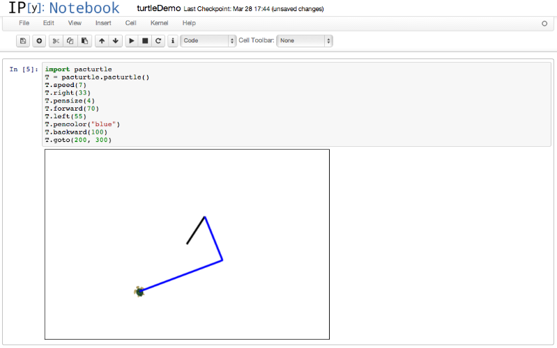

Integrating a turtle module within IPython.
This project is maintained by claudinebull
For this project we created a Turtle module to be used in the IPython Notebook. This was meant to mimic the Turtle module from Python. The IPython notebook is an interactive environment where the user can write Python code within their browser, without needed Python installed in their computer.
The Turtle module is a module used for drawing shapes. The user controls the turtle with simple commands, such as moving forward, rotating, and putting the pen down or up. If the pen is down and the turtle is moving, it will draw a line under it's path.
Using the turtle is simple, and the results of coding actions are very visible. This makes it a great way to introduce programming to both children and adults. The turtle module is a great learning tool.
Because it is in the browser, a teacher can easily teach this to the entire class.
By inputting the following commands into a new notebook page, the turtle can be easily manipulated:
import pacturtle
T = pacturtle.pacturtle()
T.speed(7)
T.right(33)
T.pensize(4)
T.forward(70)
T.left(55)
T.pencolor("blue")
T.backward(100)
Figure 1: An example of how to use the turtle module.
For Mac:
Step 1: Open the terminal. This can be done by clicking the magnifying glass in the top right corner of your screen and typing 'terminal'. You can also find the terminal application in Applications.
Step 2: You will need to go to the directory where you want the IPython Notebook stored. Change into that directory. (Hint: You can create a directory by typing mkdir nameofdirectory and then to move into that directory within the terminal type cd nameofdirectory).
Step 3: Within the directory and type git clone https://github.com/macewanCMPT395/PACattack.git This will copy the github repository with the turtle notebook into your directory.
Step 4: In the terminal type cd pacturtle, this is the directory you will be running the notebook from.
Step 5: To run our developmental IPython copy that includes to turtle module type python -m IPython in the terminal. This will open a IPython Notebook in your default browser.
Step 6: Click "new notebook" in the top right corner. This will create new notebook where you can add and run python code.
Step 7: Run some turtle commands (an example can be found if you click "i" or refer to Figure 1) and enjoy making fun pictures!
For Windows:
Step 1: Open the MS-Dos console, or OS console command prompt.
Step 2: You will need to go to the directory where you want this notebook stored. Change into that directory.
Step 3: Type git clone https://github.com/macewanCMPT395/PACattack.git This will copy the github repository with the turtle notebook into your directory.
Step 4: In the console type cd pacturtle, this is the directory you will be running the notebook from.
Step 5: To run our developmental notebook that includes to turtle module type python.exe -m IPython notebook.
If python is not a recognized alias you can also type c:\python27\python.exe -m IPython notebook in the console. Change the directory accordingly to where you installed python. This will open a IPython Notebook in your default browser.
Step 6: Click "new notebook" in the top right corner. This will create new notebook where you can add and run python code.
Step 7: Run some turtle commands (an example can be found if you click "i" or refer to Figure 1) and enjoy making fun pictures!
Having trouble with using the turtle module? The team members for PACAttack are Claudine Gladue (@claudinebull), Andrew Kind (@andrewkind) and Paul Schmermund (@prschmermund).